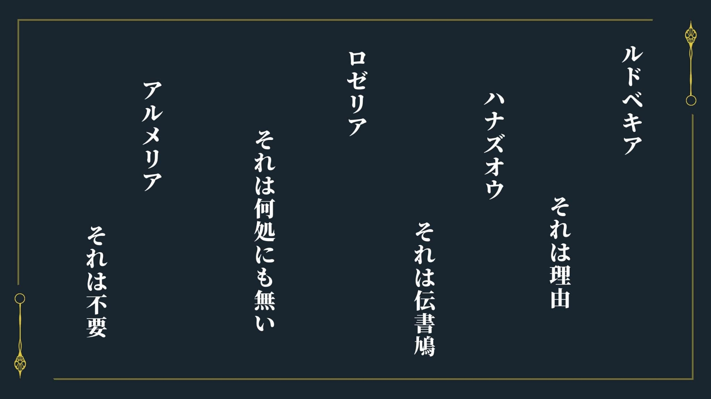
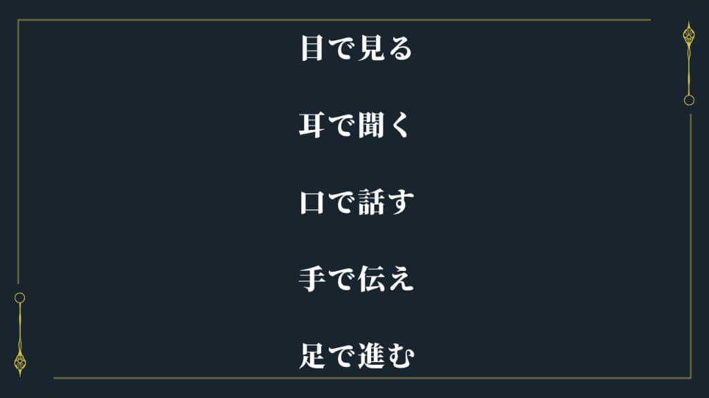
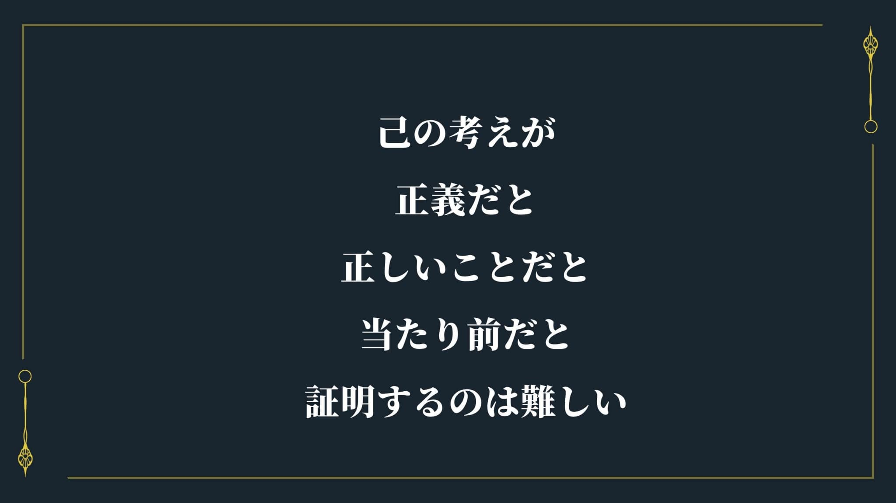

壁の額
壁の額を確認
【１の部屋の額】
【１の部屋の額】
それぞれの花言葉から
ルドベキア それは理由
ルドベキアの花言葉：正義・公平
今回の実験がそれぞれの「人を殺す側」と「人を殺される側」で「公平」に行われ、自分たちの「正義（人の道にかなっていて正しいこと）」を行っている
ハナズオウ それは伝書鳩
ハナズオウの花言葉：裏切者
伝書鳩は元々はカワラバトの帰巣本能を利用し遠隔地にメッセージを送る通信手段として利用するため改良された鳩のこと
→外へと通じる手段を持つ裏切者がいる
ロゼリア それは何処にも無い
ロゼリアの花言葉：悪意
→この館の出来事に悪意は何処にも無い
アルメリア それは不要
アルメリアの花言葉：共感
→誰もこの館の殺人理由に共感は求めていない

【２の部屋の額】
【２の部屋の額】
殺人をしたか、した場合の殺した人を覚えているかの話
覚えていないのが2人 一ノ瀬／双葉
→殺した人など覚えていない
覚えているが数えていないが1人 志知沢
→思い出そうとすれば思い出せる
数えられるがしていないが2人 陸良／市川
→記録にはあるが覚えていない
数えきれないのが1人 御膳
→何人死んだか知らない（間接的な死も含めてなので、覚えていないとは別）
誰一人も忘れたくなかったのが1人 三田
→誰も忘れたくないと言いつつしっかり恋人だったことの証拠は処分している
誰も忘れていないのが2人 詩志麻／二戸
→記憶にも記録にもあり誰一人も忘れていない
やっていないのが3人 生三／九重／八重
→殺人していないのが3人

【３の部屋の額】
【３の部屋の額】
目で見る
この額の意図は、「手で伝え」の部分 →この館に手で伝える必要があるということ
→図書館の情報から喋れない被害者の話もあり察しがいい人向け

【４の部屋の額】
【４の部屋の額】
本シナリオように考えた
あいうえお表のパングラム
８の招待客の名前を解くのに使う


【５の部屋の額】
【５の部屋の額】
ここの主催者の主張サイコパス、ソシオパスの意味合いがある

【６の部屋の額】
【６の部屋の額】
ここの招待客が求めるものや主催者の主張

【７の部屋の額】
【７の部屋の額】
８の招待客の名前謎解きのヒント
古のモノ→あいうえお表やいろは歌
新しいモノ→４の部屋の額
タコの心臓＝３つ
１つ目：【メモ３】「にくもけね」
２つ目：【メモ４】
３つ目：４の部屋の額
「謎」と「必要がない」を共通点としている

【９の部屋の額】
【９の部屋の額】
いろは歌最初に届けられた空色の封筒の差出人を解くために必要なもの
また、詩志麻からの手紙【メモ５】の密告にも関連する
上杉暗号でとくためのもの

上杉暗号をもとに７×７にしたもの。